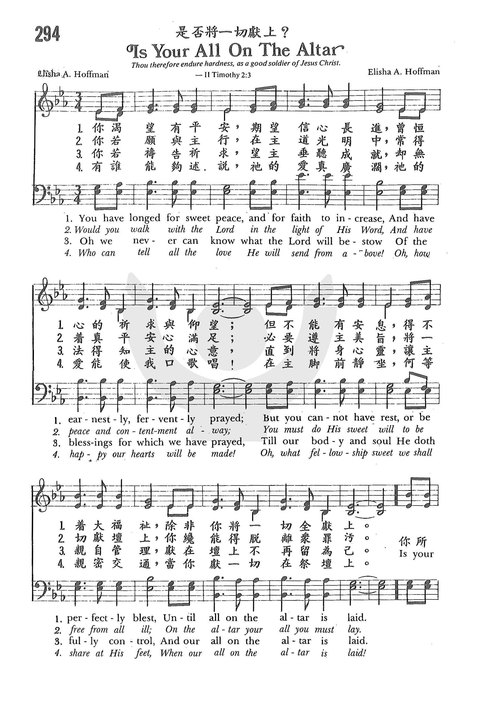

|
|
|
|
1 You have longed for sweet peace, Refrain: 2 Would you walk with the Lord 3 Oh, we never can know 4 Who can tell all the love
|
453是否将一切献上
1.你渴望有平安，期望信心日坚，
曾�琱萿漪閮D不间断； 但得不到安恬， 若要福乐完满，除非你将一切全奉献。 你所有是否作活祭献在祭坛？ 是否你身心归圣灵掌管？ 要得福乐甘甜， 要得纯全平安，身心，灵魂需献上祭坛！ 2.你若愿与主行，在主道光明中， 得着真平安满足心衷， 必要遵行主命， 恶事尽都弃绝，并将所有向主全献呈。 你所有是否作活祭献在祭坛？ 是否你身心归圣灵掌管？ 要得福乐甘甜， 要得纯全平安，身心，灵魂需献上祭坛！ 3.你若向主吁祈，盼望主垂顾你， 甚难知主恩如何福庇，直到将心、灵、体， 让主亲自管理，献在坛上不再留为己。 你所有是否作活祭献在祭坛？ 是否你身心归圣灵掌管？ 要得福乐甘甜， 要得纯全平安，身心，灵魂需献上祭坛！ 4.有谁能尽传讲？他的爱广无量！ 他的爱能使我口颂扬，与主亲密交往， 主前福乐共享，只要献一切在祭坛上。 你所有是否作活祭献在祭坛？ 是否你身心归圣灵掌管？ 要得福乐甘甜， 要得纯全平安，身心，灵魂需献上祭坛！
|
|
https://www.mred365.cn/szxg/7456.html https://www.zanmeishige.com/tab/25662.html?songbook=1&index=294
 https://hymnary.org/hymn/SSSH1989/page/297
|
|
|
|
|

-

https://youtu.be/xulOT5-157c -
是否将一切献上--传统诗歌演唱 https://youtu.be/omfHDGUG9AI
| Text: | Is Your All on the Altar? |
| Author: | Elisha A. Hoffman |
| Tune: | [You have longed for sweet peace, and for faith to increase] |
| Composer: | Elisha A. Hoffman |
| Short Name: | E. A. Hoffman |
| Full Name: | Hoffman, E. A. (Elisha Albright), 1839-1929 |
| Birth Year: | 1839 |
| Death Year: | 1929 |
Elisha Hoffman (1839-1929)

after graduating from Union Seminary in Pennsylvania was ordained in 1868. As a minister he was appointed to the circuit in Napoleon, Ohio in 1872. He worked with the Evangelical Association's publishing arm in Cleveland for eleven years. He served in many chapels and churches in Cleveland and in Grafton in the 1880s, among them Bethel Home for Sailors and Seamen, Chestnut Ridge Union Chapel, Grace Congregational Church and Rockport Congregational Church. In his lifetime he wrote more than 2,000 gospel songs including"Leaning on the everlasting arms" (1894). The fifty song books he edited include Pentecostal Hymns No. 1 and The Evergreen, 1873.
Mary Louise VanDyke
Tune Information
| Title: | [You have longed for sweet peace, and for faith to increase] |
| Composer: | E. A. Hoffman (1900) |
| Incipit: | 12333 13455 53113 |
| Key: | F Major |
| Copyright: | Public Domain |
“IS YOUR ALL ON THE ALTAR?” hymnstudiesblog
“As the servants of Christ, doing the will of God from the heart” (Eph. 6:6)
INTRO.:
A song which encourages us to dedicate our entire lives to the Lord that we might be servants of Christ and do the will of God from the heart is “Is Your All on the Altar?” The text was written and the tune (Hoffman or All on the Altar) was composed both by Elisha Albright Hoffman (1839-1929). One source says, “Elisha A. Hoffman wrote both words and music in 1900. No other information has been found concerning the hymn.” Another source gives the date of 1905, which may have been its first publication. Hoffman was a prolific hymn writer of the late nineteenth century, providing both text and tune for such well known hymns as “Are You Washed in the Blood?”, “I Must Tell Jesus,” “Is Thy Heart Right with God?”, and “What a Wonderful Savior,” and texts for “Glory to His Name” with tune by John Hart Stockton, “Leaning on the Everlasting Arms” with tune by Anthony Johnson Showalter, and “To Christ Be True” with tune by Daniel M. Wilson.
Among hymnbooks published by members of the Lord’s church during the twentieth century for use in churches of Christ, to my knowledge “Is Your All on the Altar?” has never appeared nor is found today in any. A friend and brother in Christ once e-mailed me with a question about this song. “Are you familiar with the song, ‘Is Your All on the Altar?’? It is one of my wife’s favorites, even though it has not been in any of the songbooks we have used in years.” I replied, “Yes, I am familiar with the song, ‘Is Your All on the Altar?’ I think that it is a good song (almost anything written by Elisha Hoffman is worth looking at), but as you note it is not in any hymnbooks generally used by brethren through the years. I would be interested in knowing how your wife came to know it. Has it been in some books published by brethren in the past with which I’m not familiar? It would be a good song to introduce to today’s brethren.” The wife responded, “I heard it on a gospel music station in the area. I have tried to find a copy of the song with voices but no luck. It is one of the prettiest songs and absolutely beautiful words.” I agree.
Among other hymnbooks in my collection, I have seen the song in the undated Praise and Worship Hymnal, the 1972 Worship in Song Hymnal, and the 1993 Sing to the Lord Hymnal, all published by the Lillenas Publishing Company; the 1940 Broadman Hymnal, the 1947 Voice of Praise, and the 1964 Christian Praise, all published by Broadman Press; the 1948 Church Service Hymnal published by the Rodeheaver Company; the 1951 Inspiring Hymns and the 1968 Great Hymns of the Faith both published by Singspiration Music Inc.; the 1951 Church Hymnal published by the Tennessee Music and Printing Company; the 1957 All American Church Hymnal published by the John T. Benson Publishing Company; the 1959 Christian Hymnal (Mennonite) published by Church of God in Christ, Mennonite, Gospel Publishers; the 1967 Favorite Hymns of Praise published by the Tabernacle Publishing Company; the 1969 Hymns of the Spirit published by Pathway Press; the 1972 Soul Stirring Songs and Hymns published by the Sword of the Lord Publishers; the 1972 Living Hymns published by Encore Publications Inc.; the 1976 New Church Hymnal published by Lexicon Music Inc.; the 1992 Pilgrim’s Praises published by Ambassador Publishers; the 1995 Rejoice Hymnal published by Tempo Music Publications Inc.; the 1997 Majesty Hymns published by Majesty Music Inc.; and the 1999 Songs and Hymns of Revival published by North Valley Publications.
The song talks about the need for complete sacrifice before the Lord and the blessings that come with it
I. Stanza 1 says that we can have increased faith
“You have longed for sweet peace, And for faith to increase,
And have earnestly, fervently prayed;
But you cannot have rest, Or be perfectly blest,
Until all on the altar is laid.”
- Everyone who wishes to please God wants to have an increase in faith: Lk. 17:5
- In fact, to help in this endeavor, they may often pray and ask the Lord for wisdom: Jas. 1:5
- However, we cannot expect to receive such blessings from the Lord until we have laid our all upon the altar. It is possible that this hymn has been passed over by the editors of hymnbooks used among churches of Christ because they feared that it sounded too much like “go to the altar and kneel before the Lord for salvation.” However, laying our all upon the altar is simply a figure of speech for sacrificing our all for the Lord drawn from the Old Testament: Exo. 29:37, Lev. 1:9
II. Stanza 2 says that we can have peace
“Would you walk with the Lord, In the light of His Word,
And have peace and contentment alway?
You must do His sweet will, To be free from all ill,
On the altar your all you must lay.”
- It should be our desire to walk with the Lord: Eph. 4:1
- Those who so walk can have the peace of God that passes all understanding: Phil. 4:6-7
- However, to do this, they must lay their all on the altar and make themselves a living sacrifice: Rom. 12:1-2
III. Stanza 3 says that we can have blessings
“O we never can know What the Lord will bestow
Of the blessings for which we have prayed,
Till our body and soul He doth fully control,
And our all on the altar is laid.”
- Our loving heavenly Father is the source of every good and perfect gift: Jas. 1:17
- Therefore, we look to Him and pray that He will grant us all spiritual blessings in heavenly places in Christ: Eph. 1:3
- Yet, to receive such blessings, we must do as Paul did and lay our all on the altar by counting all things as loss for Christ: Phil. 3:8
IV. Stanza 4 says that we can have fellowship
“Who can tell all the love He will send from above,
And how happy our hearts will be made,
Of the fellowship sweet We shall share at His feet,
When our all on the altar is laid.”
- Certainly we recognize that God has sent His love from above for mankind: Jn. 3:16
- Therefore, He has made it possible for us to be in fellowship sweet with Him: 1 Jn. 1:7
- But to have this fellowship, we must lay our all on the altar by denying self, taking up the cross, and following Him: Matt. 16:24
CONCL.:
The chorus continues to remind us of our need to lay our all upon the altar of sacrifice.
“Is your all on the altar of sacrifice laid?
Your heart does the Spirit control?
You can only be blest, And have peace and sweet rest,
As you yield Him your body and soul.”
Too many religious songs today are very self-centered and emphasize all the good things that people expect the Lord to do for them without mentioning the sacrifices that the Lord expects of us (which may be another reason why this song is not as well known, even in the denominational world, as it apparently once was). Yes, the Lord will bless us richly, but He will also ask us, “Is Your All on the Altar?”
https://hymnstudiesblog.wordpress.com/2020/08/18/is-your-all-on-the-altar/
Is Your All on the Altar? Wordwise Hymns
Words: Elisha Albright Hoffiman (b. May 7, 1839; d. Nov.
25, 1929)
Music: Elisha Albright Hoffiman
Links:
Wordwise Hymns (Elisha
Hoffman)
The Cyber
Hymnal
Hymnary.org
Note: As of writing this, the Cyber Hymnal gives a date of 1905 for the publication. However, Hymnary.org shows a song book with it, dating 1900, so that seems the better option.
Every now and then, in the news, a near drowning is reported, a tragedy that was thwarted by the bold rescue action of another swimmer. But frequently it happens that the desperate person thrashes about violently, when approached, striking out at his would-be saviour in panic. Until the drowning person surrenders to his rescuer, he puts them both in peril. It’s in giving up that he gains what he truly needs.
In most situations this is counter-intuitive. Usually, those in trouble are urged to keep trying, and even redouble their efforts. Quitters are scorned, drop-outs are despised, while individual effort and personal persistence are lauded. But there are some cases when resignation is victory, when surrender brings success. That is so in our relationship with the Lord.
The Bible makes it plain that no one will ever get to heaven by his or her own efforts. Salvation is by the grace of God–His unmerited favour–”not of works lest anyone should boast” (Eph. 2:8-9). It is “not by works of righteousness which we have done, but according to His mercy He saved us” (Tit. 3:5). It is through faith in the Calvary work of Christ that one becomes a Christian (Jn. 3:16). Salvation is not a do, but a done.
And what about after that? What of how we live the Christian life? “Are you so foolish [Paul asks in Galatians]? Having begun in the Spirit, are you now being made perfect by the flesh?…If we live in the Spirit, let us also walk in the Spirit” (Gal. 3:3; 5:25).
The Word of God describes living as the Christians we’ve become through faith it as a walk of faith (II Cor. 5:7), and a life of surrender to the will of God. There is a connection between the two: “by faith Abraham obeyed” (Heb. 11:8). We obey God “doing the will of God from the heart” (Eph. 6:6), because we trust His Word, and are convinced His will is best.
Over a hundred times in the New Testament Christ is called the “Lord Jesus.” He is both our Saviour and Lord. And if we call Him Lord, we are recognizing Him as the Ruler of our lives. There is a telling incident in Acts when God commands Peter to do something he doesn’t want to do. His response is, “Not so [or, No!], Lord” (Acts 10:14). But that is a contradiction. Either He is Lord or not. If He is, then His will is to be obeyed.
Yet Peter’s response is not unique. Many times life’s decisions come down to a kind of tug-of-war between God and us. One way some may try to resolve this is to compartmentalize their lives, relegating church and religion to one compartment–over which they recognize God’s management. Then, for the rest, family, friends, job, recreation, and so on, that is theirs, and they do more or less as they please with such things.
But, as someone has put it, He is either Lord of all, or not Lord at all. The Bible uses the sacrifice analogy. In the Old Testament sacrificial system, the animal did not get to choose whether or not to be a sacrifice–or which part of it would be sacrificed. Then, in the New Testament we read, “You are not your own, for you were bought at a price [paid by the blood of Christ]” (I Cor. 6:19-20). We are to “present [our] bodies a living sacrifice, holy, acceptable to God, which is [our] reasonable service” (Rom. 12:1).
It is in full surrender to the will of God that we find true peace and joy, and fulfilment in life. That is the theme of a gospel song by American pastor Elisha Hoffman. Among the two thousand songs he wrote–often supplying both words and music–is one that says this:
CH-1) You have longed for sweet peace,
And for faith to increase,
And have earnestly, fervently prayed;
But you cannot have rest,
Or be perfectly blest,
Until all on the altar is laid.
Is your all on the altar of sacrifice laid?
Your heart does the Spirit control?
You can only be blest,
And have peace and sweet rest,
As you yield Him your body and soul.
CH-3) O we never can know
What the Lord will bestow
Of the blessings for which we have prayed,
Till our body and soul
He doth fully control,
And our all on the altar is laid.
Questions:
1) Is their some area of your life you have resisted turning over to the
Lord’s full control?
2) What has been the result for you of clinging to the control of this area?
Links:
Wordwise Hymns (Elisha
Hoffman)
The Cyber
Hymnal
Hymnary.org
https://wordwisehymns.com/2015/09/04/is-your-all-on-the-altar/